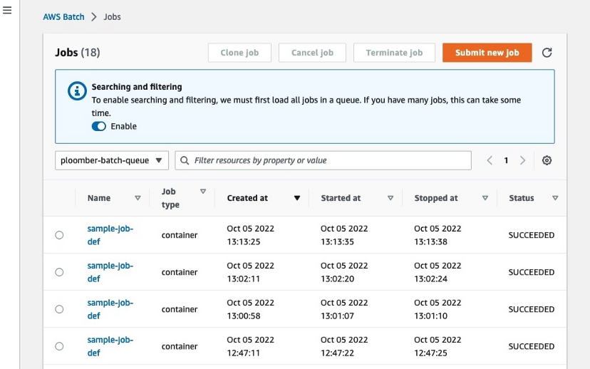
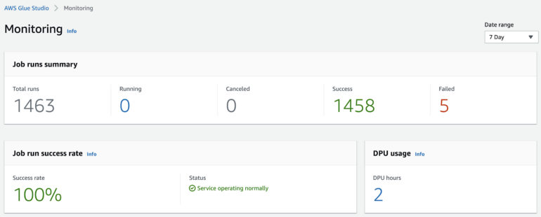
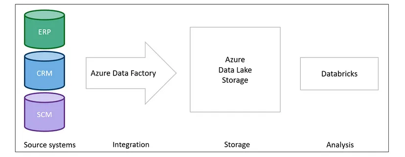
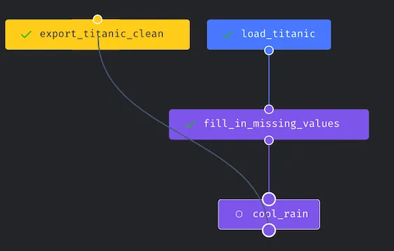
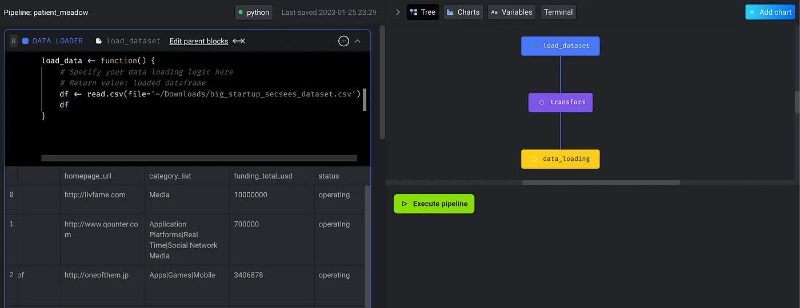
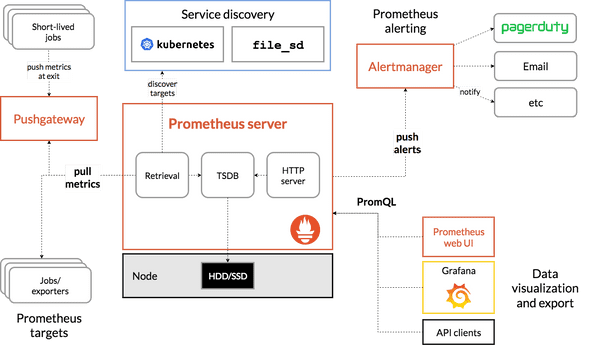

29 Tools
29.1 Misc
The 2024 MAD (Machine Learning, AI & Data) Landscape
pricelevel - What companies actually pay for software. PriceLevel gives you visibility into the price hidden behind “Contact Us”.
AWS Batch - Managed service for computational jobs. Alternative to having to maintain a kubernetes cluster
- Takes care of keeping a queue of jobs, spinning up EC2 instances, running code and shutting down the instances.
- Scales up and down depending on how many jobs submitted.
- Allows you to execute your code in a scalable fashion and to request custom resources for compute-intensive jobs (e.g., instances with many CPUs and large memory) without requiring us to maintain a cluster
- See bkmks: Hosting >> AWS >> Batch
- Packages:
{kind=link}
{kind=link}
29.2 Stack Component Rankings
- DB format
- arrow files
- ELT Operations
- *dbt
- Google’s alternative is Dataform
- AWS’s alternative is Databrew
- *Spark
- *Google Big Query SQL
- *AWS Athena
- *dbt
- Orchestration and monitoring
- *Targets
- + {cronR} for orchestration + scheduling
- *Mage-AI
- *AWS Glue
- Prefect
- Airflow
- *Targets
- Data Ingestion
- Airbyte (data ingestion)
- fivetran (data ingestion)
- Can “process atomic REST APIs to extract data out of SAAS silos and onto your warehouse”
- terraform (multi-cloud management)
- Tracking/Versioning for Model Building
- *DVC
- MLFlow
- Reporting
- blastula (email), xaringan (presentation), RMarkdown (reports), flexdashboard (dashboards),
- RStudio Connect (publishing platform to stakeholders)
- dashboards, apps
- on-demand and scheduled reports
- presentations
- APIs (?)
- Publish R and Python
- Enterprise security
- Can stay in RStudio
- Visualization Platforms
- Looker*
- PowerBI, DataStudio
29.3 Dependency Management
- R
- r2u for linux installations
- “for Ubuntu 20.04 and 22.04 it provides _all_ of CRAN (and portion of BioConductor) as binary #Rstats packages with full, complete and automatic resolution of all dependencies for full system integration. If you use `bspm` along with it you can even use this via `install.packages()` and friends. Everything comes from a well connected mirror”
- r2u for linux installations
29.4 Data versioning
- Flat Table by Github
- Has a Github action associated with it
- Has a datetime commit message
- Lists as a feature that it tracks differences from one commit to the next, but doesn’t a normal data commit doe the same thing?
- Lumberjack R package
- Add functions to your processing script
- tracks using a log file
- options for changes you want to track
29.5 Data Ingestion
29.6 Orchestration
29.6.1 Airflow
Open-source platform for authoring, scheduling, and executing data pipelines.
Features for managing and monitoring data pipelines, including integration with various data storage and processing technologies. Similar to the Unix cron utility — you write scripts and schedule them to run every X minutes.
Airflow can be used for any sort of scheduling task, but is often used for scheduling data modeling. schedule, run and monitor the refresh of our data warehouse
Monitoring on-prem checking Airflow logs is not user-friendly (better in AWS MWAA)
different types of logs for task, web server, scheduler, worker, and DAGs
have to SSH into the server and run commands which becomes more complicated when you want to use distributed servers for scalability.
- Requires you to create a central logging storage and make additional setup to make all servers write logs into that single place
Server-based remains active even when not running jobs –> continually incurring cost
- No latency since servers are always running
Problems
Long feedback loop
- While programming, instant feedback of your DAG becomes crucial when you want a sanity check before your code goes too far.
- To see the graph view, which is mainly for visualizing dependencies in DAGs, your code needs to be in the folder of an Airflow scheduler that can be picked up. The airflow scheduler also takes time to render and parse your DAG until it shows up.
- Makes debugging difficult during the development cycle, so some engineers write more lines of code and test them all together. If the lines of code become unmanageable on one screen, you might vaguely remember what to validate and what dependencies to check.
Difficult with local development
a docker image can be used to inject as much production-related information as possible. But it’s still not 100% copy, and it takes tremendous effort to develop and maintain that docker image.
Even if you set up dev, staging, and production environments for running Airflow, they aren’t totally isolated and developers can end-up interfering with one another. Services/Extensions Astronomer offers a managed Airflow service.
Amazon Managed Workflows for Apache Airflow (MWAA) - managed Airflow service
Orchestrate jobs in EMR, Athena, S3, or Redshift
- Glue
- Airflow has the glue operator
- CloudFormation can be used to configure and manage
- Glue
allows for autoscaling which saves on costs by scaling down when usage is low
still needs a server running even when not running jobs
monitoring much easier since all the logs are written into CloudWatch search certain logs using Logs Insights
have a dashboard that displays usage of server resources like CPU, memory, and network traffic.
monitor numerous other Airflow-specific metrics.
set up alerts and manage notification recipients programmatically.
Cost factors
- Instance size
- Additional worker instance
- Additional scheduler instance
- Meta database storage
Potential Issues:
- Resources are shared on multiple jobs so performance can suffer if:
- Don’t distribute trigger times evenly
- Misconfigure your maximum worker count
- Resources are shared on multiple jobs so performance can suffer if:
Operate through AWS SDK
- Can
- create, update, and delete MWAA environments and retrieve their environment information that includes logging policies, number of workers, schedulers
- run Airflow’s internal commands to control DAGs
- Can’t
- Some of Airflow’s native commands like backfill (check this AWS document), dags list, dags list-runs, dags next-execution, and more
- Can
29.6.2 AWS Glue
Cloud-based data integration service that makes it easy to move data between data stores.
- Includes a data catalog for storing metadata about data sources and targets, as well as a ETL (extract, transform, and load) engine for transforming and moving data.
- Integrates with other AWS services, such as S3 and Redshift, making it a convenient choice for users of the AWS ecosystem. Serverless (i.e. costs only incurred when triggered by event) Each job triggers separate resources, so if one job overloads resources, it doesn’t affect other jobs
- Jobs experience latency since instances have to spin-up and install packages
- Cost Charged by Data Processing Unit (DPU) multiplied by usage hours (Pricing)
- Job types:
- Python shell: you can choose either 0.0625 or 1 DPU.
- Apache Spark: you can use 2 to 100 DPUs.
- Spark Streaming: you can use 2 DPUs to 100 DPUs.
- Job types:
Can run Spark
Expensive for longer running ETL tasks. So, setting up your own container and deploying it on ECS with Fargate makes sense, both in terms of efficiency and cost.
Monitoring
Cloudwatch
GlueStudio within Glue Clicking number sends you to Cloudwatch where you can drill down into jobs
CloudFormation can be used to configure and manage
Glue SDK available
29.6.3 Prefect
Easier to manage for smaller data engineer teams or a single data engineer
more user friendly than Airflow; Better UI; more easily discover location and time of errors
purely python
Misc
add slack webhook for notifications
Has slack channel to get immediate help with issues or questions
automatic versioning for every flow, within every project
- also document the models deployed with each version in the README they provide with every flow
Components
Tasks - individual jobs that do one unit of work
- e.g. a step that syncs Fivetran data or runs a dbt model
Flows - functions that consist of a bunch of smaller tasks, or units of work, that depend on one another
- e.g. 1 flow could be multiple tasks running Fivetran syncs and dbt models
Example:
from prefect import flow, task @flow(name="Create a Report for Google Trends") def create_pytrends_report( keyword: str = "COVID", start_date: str = "2020-01-01", num_countries: int = 10 ):
These flows are then scheduled and run by whatever types of agents you choose to set up.
- Some options include AWS ECS, GCP Vertex, Kubernetes, locally, etc.
-
Also see Create Robust Data Pipelines with Prefect, Docker, and GitHub
Defintions
- Specify the execution environment infrastructure for the flow run
- Specify how your flow code is stored and retrieved by Prefect agents
- Create flow runs with custom parameters from the UI
- Create a schedule to run the flow
Steps
- Build the deployment definition file and optionally upload your flow to the specified remote storage location
- Create the deployment by applying the deployment definition
Syntax:
prefect deployment build [OPTIONS] <path-to-your-flow>:<flow-name>Example:
prefect deployment build src/main.py:create_pytrends_report \ -n google-trends-gh-docker \ -q test
Deployment for the flow
create_pytrends_report(see flow example) from the file, “src/main.py”-n google-trends-gh-dockerspecifies the name of the deployment to begoogle-trends-gh-docker.-q testspecifies the work queue to betest. A work queue organizes deployments into queues for execution.Output
- “create_pytrends_report-deployment.yaml” file and a “.prefectignore” created in the current directory.
- “create_pytrends_report-deployment.yaml”: specifies where a flow’s code is stored and how a flow should be run.
- “.prefectignore”: prevents certain files or directories from being uploaded to the configured storage location.
- “create_pytrends_report-deployment.yaml” file and a “.prefectignore” created in the current directory.
{kind=link}
29.6.4 Azure Data Factory
Allows users to create, schedule, and orchestrate data pipelines for moving and transforming data from various sources to destinations.
Data Factory provides a visual designer for building pipelines, as well as a range of connectors for integrating with various data stores and processing technologies.
Example: Demand Planning Project
29.6.5 Mage-AI
Enables users to define DAG regardless of the choice of languages (python/SQL/R)
Web-based IDE, so its mobility allows working from different devices, and sharing becomes more straightforward.
- UI layout feels like using RStudio. It has many sections divided into different areas.
- One of the areas is the DAG visualization which provides instant feedback to the user on the task relationship.
DAGs
- The pipeline or DAG is constructed with modular blocks—a block maps to a single file.
- Block Options
- Execution with upstream blocks: this triggers all upstream blocks to get the data ready for the current block to run
- Execute and run tests defined in the current block: this focuses on the current block to perform testing.
- Set block as dynamic: this changes the block type into the dynamic block, and it fits better to create multiple downstream blocks at runtime.
- Manipulate dependencies via drag and drop
- mage-ai keeps track of the UI changes the user made and automatically builds the dependencies DAG into the YAML file. (./pipelines/{your_awesome_pipeline_name}/metadata.yaml)
- Visualize data in each block
- Helpful for inspecting your input data and further validating the transformation.
- Once the chart has been created, it will also be attached to the current block as the downstream_blocks.
R
- Allows users to write the main ETL (Extraction, Transformation, and Loading) blocks using R.
29.6.6 kestra
Popular orchestration libraries such as Airflow, Prefect, and Dagster require modifications to the Python code to use their functionalities. You may need to modify the data science code to add orchestration logic
Kestra, an open-source library, allows you to develop your Python scripts independently and then seamlessly incorporate them into data workflows using YAML files.
29.7 ELT/ETL Operations
29.7.1 Misc
- dbt - see DB, dbt
- Google Dataform - Docs, Best Practices
29.7.2 AWS DataBrew
Features to clean and transform the data to ready it for further processing or feeding to machine learning models
- No coding; pay for what you use; scales automatically
- over 250 transformations
- Allows you to add custom transformations with lambda functions
29.8 Model Experimentation/Version Tracking
29.8.1 DVC
Tracks data and models while model building
Store code and track changes in a Git repository while data/models are in AWS/GCP/Azure/etc. storage
Tracking changes
- Steps
- hashes every file in the directory data,
- adds it to .gitignore and
- creates a small file data.dvc that is added to Git.
- By comparing hashes, DVC knows when files change and which version to restore.
- Steps
Initial Steps
- Goto project directory -
cd <path to local github repo> - Initialize DVC -
dvc init - Add a data path/uri -
dvc remote add -d remote path/to/remote- can be Google Drive, Amazon S3, Google Cloud Storage, Azure Storage, or on your local machine
- e.g. Google Drive:
dvc remote add -d remote gdrive://<hash>- The hash will the last part of the URL, e.g. “https://drive.google.com/drive/u/0/folders/1v1cBGN9vS9NT6-t6QhJG”
- Confirm data set-up:
dvc config -l- The config file is located inside “.dvc/”
- To version your config on github:
git add .dvc/config
- Add data/ to .gitignore
- Example showed adding every file in the repo manually but this seems easier
- Add, commit, and push all files to repo
- Main differences to regular project initialization
- data/ directory doesn’t get pushed to github
- data.dvc file gets pushed to github
- Main differences to regular project initialization
- Set-up DVC data cache
Can be local directory/s3/gs/gdrive/etc
Example: S3
dvc remote add -d myremote s3://mybucket/path git add .dvc/config git commit -m "Configure remote storage" git push dvc push
- Goto project directory -
I’m guessing .dvc/config is created with
dvc remote addand wasn’t there before. Otherwise in steps 3 and 4, I need to add the files manually.
29.9 Model/Data Drift Monitoring
- Arize AI
- Docs
- Accessed through Rest API, Python SDK, or Cloud Storage Bucket
- Fiddler AI Monitoring: fiddler.ai has a suite of tools that help in making the AI explainable, aid in operating ML models in production, monitor ML models and yes data & model drift detection is one of them
- Evidently: EvidentlyAI is another open-source tool, which helps in evaluating and monitoring models in production. If you are not using Azure ML and looking for a non-commercial tool that is simple to use, evidentlyai is a good place to start.
- Azure ML
- Monitors data; uses wasserstein distance
- AWS Glue DataBrew
- monitors features
- calculates full suite of summary stats + entropy
- Can be exported to a bucket and then download to measure change over time
- Accessed through console or programmatically
- Generates reports that can be viewed in console or be exported in html, pdf, etc.
29.10 App/Cluster Monitoring
29.10.1 Prometheus
Don’t use for ML monitoring (from article)(maybe for apps?)
Need to use multiple Prometheus Metric types for cross-component monitoring
Need to define histogram buckets up front for single-component monitoring
Correctness of query results depending on scraping interval
Inability to handle sliding windows
Disgusting-looking PromQL queries
High latency for cross-component metrics (i.e., high-cardinality joins)
Misc
Prometheus is not a time series database (TSDB). It merely leverages a TSDB.
Because Prometheus scrapes values periodically, some Metric types (e.g., Gauges) can lose precision if the Metric value changes more frequently than the scraping interval. This problem does not apply to monotonically increasing metrics (e.g., Counters).
Metrics can be logged with arbitrary identifiers such that at query time, users can filter Metrics by their identifier value.
PromQL is flexible – users can compute many different aggregations (basic arithmetic functions) of Metric values over different window sizes, and these parameters can be specified at query time.
Metric values (Docs):
- Counter: a cumulative Metric that monotonically increases. Can be used to track the number of predictions served, for example.
- Gauge: a Metric that represents a single numerical value that can arbitrarily change. Can be used to track current memory usage, for example.
- Histogram: a Metric that categorizes observed numerical values into user-predefined buckets. This has a high server-side cost because the server calculates quantiles at query time.
- Summary: a Metric that tracks a user-predefined quantile over a sliding time window. This has a lower server-side cost because quantiles are configured and tracked at logging time. Also, the Summary Metric doesn’t generally support aggregations in queries.
Process
- Users instrument their application code to log Metric values.
- Those values are scraped and stored in a Prometheus server.
- The values can be queried using PromQL and exported to a visualization tool like Grafana
- The are R packages that might make querying these metrics easier so you don’t have to learn PromQL
29.11 Other
- Terraform
- Provision infrastructure across 300+ public clouds and services using a single workflow through yaml files
- Automates and makes these workflows reproducible
- Article on using it with R
- Provision infrastructure across 300+ public clouds and services using a single workflow through yaml files
- Datadog - Monitor servers in all cloud hosts in one place — alerts, metrics, logs, traces, security incidents, etc.
- PagerDuty - Automated incident management — alerts, notifications, diagnostics, logging, etc.